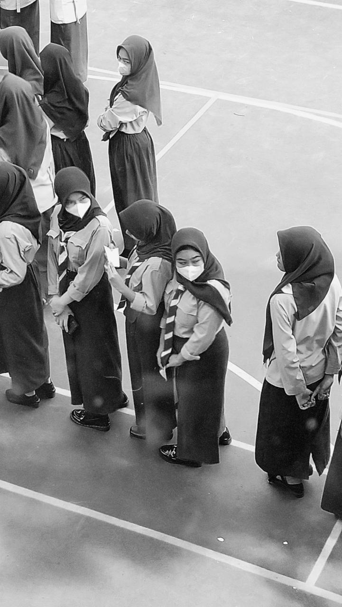
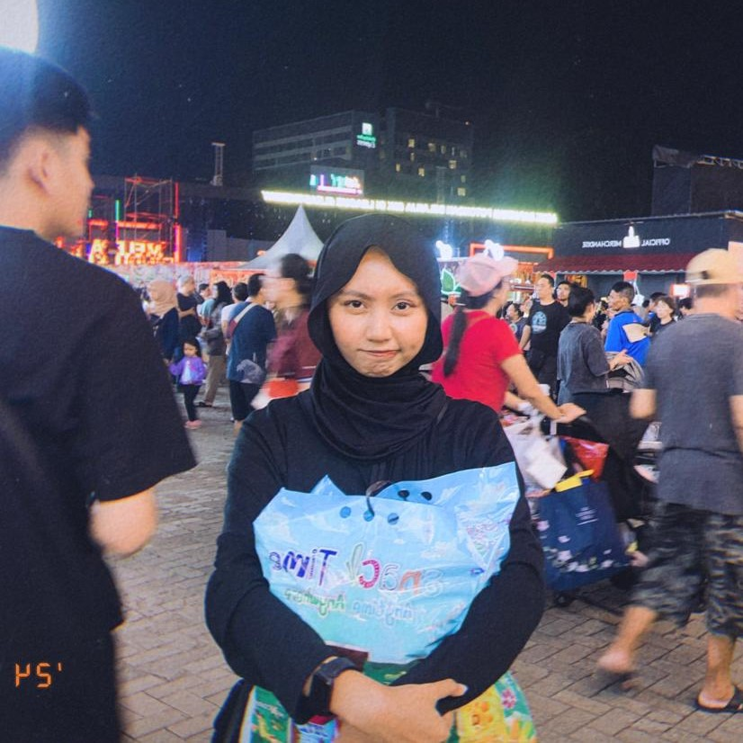

Synopsis
Seorang siswa kelas 12 tertarik pada seorang gadis bernama SAVA NISA KEYLA PUTRI, yang biasa dipanggil KEYLA, saat kegiatan ekstrakurikuler pramuka berlangsung. Meskipun siswa kelas 12 tidak diwajibkan mengikuti kegiatan tersebut, Keyla yang lelah setelah pelajaran olahraga memilih bersantai di lantai dua gedung sekolah, yang memungkinkannya mengamati lapangan tanpa mencolok. Ketertarikannya bermula ketika ia melihat Keyla keluar dari bangunan menuju lapangan. Kecantikan dan kehadirannya memikat hati Keyla, meskipun saat itu ia belum mengetahui siapa gadis tersebut. Rasa penasaran pun mulai tumbuh hingga saat ini.
Favorite music
My Fav Girl
